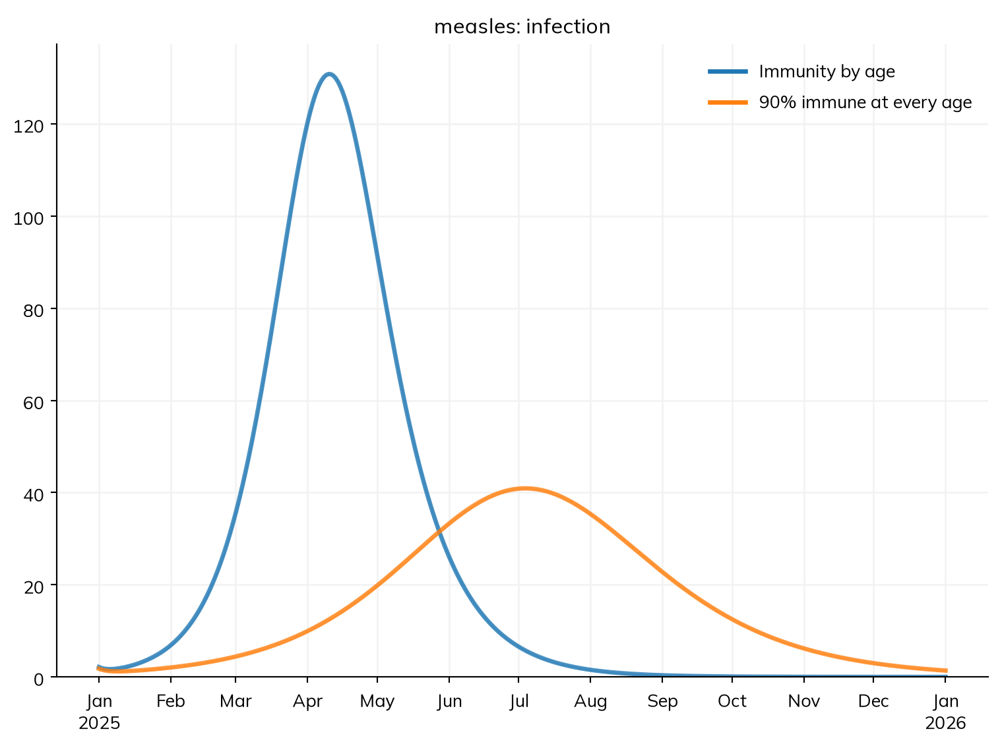
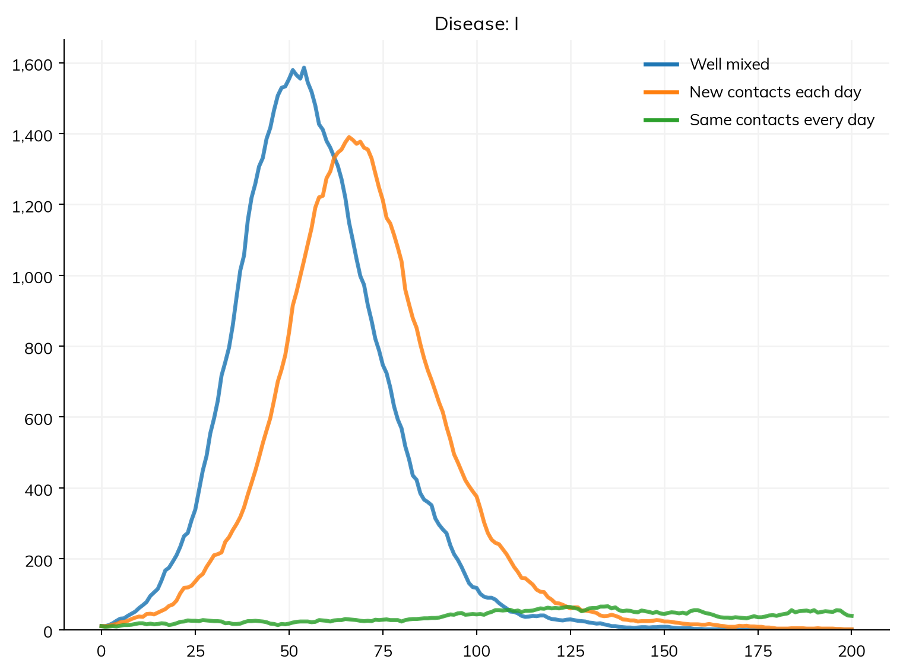
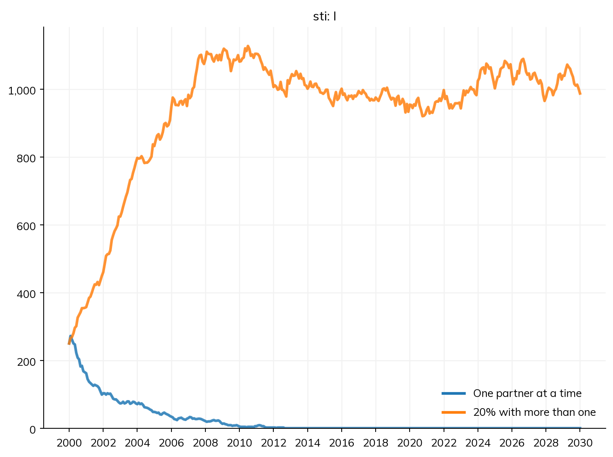
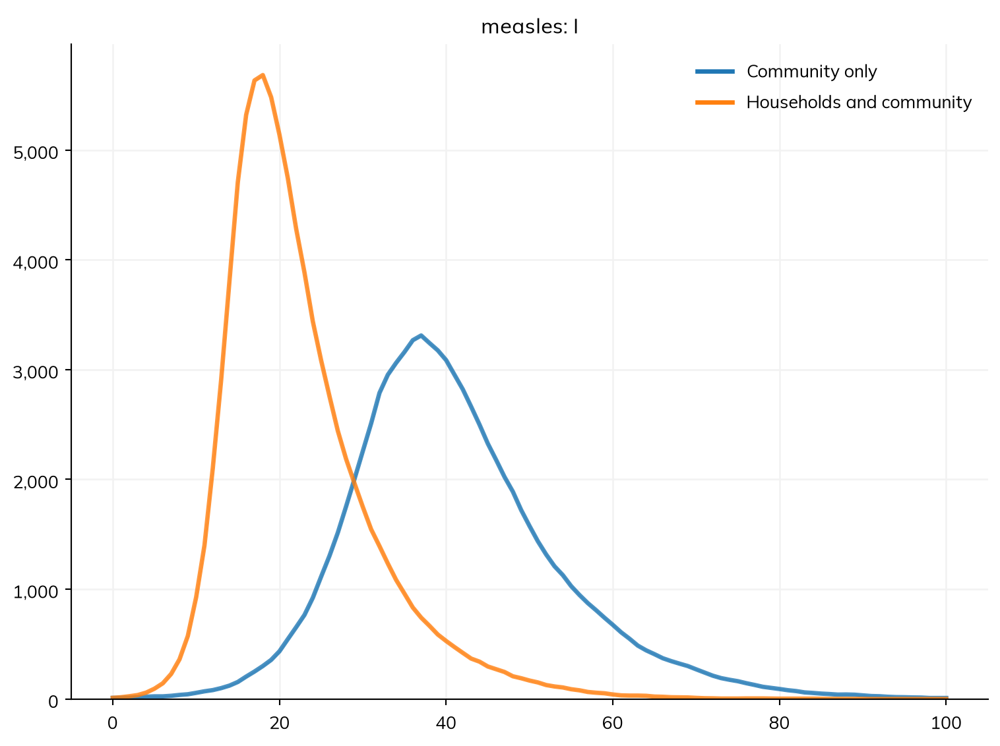

import starsim as ss
def make_measles(immune=ss.by(age=[0.8, 0.92, 0.98])):
""" The measles model of T4, by age, with the fraction immune in each age group given """
S, E, I, R = ss.states('S E I R')
beta = ss.par(0.14, bounds=[0.05, 0.5])
infection = S >> E @ beta*I
progression = E >> I @ ss.days(10)
recovery = I >> R @ ss.days(8)
measles = ss.Disease(infection, progression, recovery, init=dict(R=immune), init_n=dict(I=10), name='measles')
measles.stratify(age={0: 0.3, 15: 0.6, 65: 0.1})
return measles
matrix = [[10, 6, 1], [3, 8, 1], [3, 6, 3]]
settings = dict(total_pop=100_000, start='2025-01-01', stop='2026-01-01', verbose=0)Solutions: T4 – Mixing
These are solutions to the exercises at the end of T4 – Mixing. Many of the exercises are open-ended, so these are examples: there are often other good answers. This page runs on its own, from the setup below.
Exercises 1 to 3 start from the model of the tutorial: measles in three age groups, with immunity by age and a contact matrix, with β fixed per contact throughout.
Exercise 1
Closing schools roughly halves the contacts between children. Change the matrix so that children have 5 contacts a day with other children instead of 10. How do the reproduction number at the start and the number infected in each age group change, and why?
measles = make_measles()
open_schools = ss.contacts(ages=[0, 15, 65], matrix=matrix)
closed_schools = ss.contacts(ages=[0, 15, 65], matrix=[[5, 6, 1], [3, 8, 1], [3, 6, 3]])
for label, contacts in {'Schools open': open_schools, 'Schools closed': closed_schools}.items():
sim = ss.Sim(measles, networks=contacts, label=label, **(settings | dict(verbose=1))) # verbose=1 to print R at the start
sim.run()
print(sim.results.measles.infection.by('age').summarize().round())Sim "Schools open": measles, 100,000 people, as an ODE, 2025-01-01 to 2026-01-01
measles: R0 = 15.8 (R = 2.46 at the start, with 11% susceptible), with 10 infectious at the start
Note: people do not age between the age groups, since nobody is born or dies; pass aging=True to age them
Done in 0.0056 s; measles: 8,795 infections; at most 934 infectious, on 2025-04-27
0-14 5461.0
15-64 3208.0
65+ 127.0
Name: infection, dtype: float64
Sim "Schools closed": measles, 100,000 people, as an ODE, 2025-01-01 to 2026-01-01
measles: R0 = 13.4 (R = 1.57 at the start, with 11% susceptible), with 10 infectious at the start
Note: people do not age between the age groups, since nobody is born or dies; pass aging=True to age them
Done in 0.0041 s; measles: 6,721 infections; at most 366 infectious, on 2025-07-29
0-14 3868.0
15-64 2746.0
65+ 107.0
Name: infection, dtype: float64The reproduction number at the start (R, printed as each run starts) falls from about 2.5 to 1.6; the outbreak is about a quarter smaller (6,700 infections rather than 8,800), and peaks three months later, at the end of July. Most infections prevented are in children, but adults and older adults have fewer too, though their own contacts are unchanged: with fewer children infected, there are fewer infectious children for them to meet. (The matrix is still reciprocal, since only children’s contacts with each other changed.)
Exercise 2
Give every age group the same immunity, 90% (about the same overall fraction as above), keeping the contact matrix. How large is the outbreak now? What does this say about where gaps in immunity matter most?
contacts = ss.contacts(ages=[0, 15, 65], matrix=matrix)
msim = ss.parallel({
'Immunity by age': ss.Sim(make_measles(), networks=contacts, **settings),
'90% immune at every age': ss.Sim(make_measles(immune=0.9), networks=contacts, **settings),
})
msim.plot('measles.infection')
for sim in msim.sims:
print(sim.label, '- infections:', round(sim.results.measles.infection.sum()))
Immunity by age - infections: 8795
90% immune at every age - infections: 5857In the tutorial’s town, 0.3 × 80% + 0.6 × 92% + 0.1 × 98% ≈ 89% of people are immune, about the same as 90% at every age. Yet with the same immunity at every age, the reproduction number at the start is about 1.6 rather than 2.5, and the outbreak a third smaller (5,900 infections rather than 8,800). Where the susceptible people are matters, not only how many: a gap in immunity among children, who have the most contacts, gives measles far more chances to spread than the same gap spread evenly. This is why measles programs track coverage by age and birth cohort, not only overall.
Exercise 3
In the four towns, people spend 1% of their time in other towns. Try 0.1% and 5% instead (pars=dict(away=...)). How does the amount of movement change when the outbreak peaks in each town, and how many people are infected in each?
import numpy as np
S, R = ss.states('S R')
E, I = ss.states('E I', infected=True)
beta = ss.par(0.14, bounds=[0.05, 0.5])
away = ss.par(0.01, bounds=[0.001, 0.1]) # The fraction of time spent in other towns
measles = ss.Disease(S >> E @ beta*I, E >> I @ ss.days(10), I >> R @ ss.days(8),
init = dict(R=ss.by(age=[0.8, 0.92, 0.98])),
init_n = dict(I=ss.by(patch=[10, 0, 0, 0])), # The outbreak starts in Riverton
name = 'measles',
)
measles.stratify(age={0: 0.3, 15: 0.6, 65: 0.1})
towns = ss.geo.geography(
names = ['Riverton', 'Hillside', 'Lakeview', 'Fairfield'],
populations = [100_000, 40_000, 20_000, 10_000],
x = [0, 20, 35, 60],
y = [0, 10, -15, 5],
)
measles.stratify(patch=ss.levels(towns, mobility=ss.geo.gravity(away=away)))
contacts = ss.contacts(ages=[0, 15, 65], matrix=matrix)
sims = {f'{a:.1%} away': ss.Sim(measles, pars=dict(away=a), networks=contacts, start='2025-01-01', stop='2026-01-01', verbose=0) for a in [0.001, 0.01, 0.05]}
msim = ss.parallel(sims)
for sim in msim.sims:
res = sim.results.measles
print(sim.label)
for town in towns.names:
peak = sim.timevec[np.argmax(res.I.select(patch=town).values)]
print(f' {town}: peak on {peak}, {res.infection.select(patch=town).sum():,.0f} infections')0.1% away
Riverton: peak on 2025-04-27, 8,795 infections
Hillside: peak on 2025-06-25, 3,521 infections
Lakeview: peak on 2025-07-08, 1,760 infections
Fairfield: peak on 2025-07-18, 880 infections
1.0% away
Riverton: peak on 2025-04-29, 8,795 infections
Hillside: peak on 2025-05-22, 3,521 infections
Lakeview: peak on 2025-06-02, 1,760 infections
Fairfield: peak on 2025-06-11, 880 infections
5.0% away
Riverton: peak on 2025-05-03, 8,795 infections
Hillside: peak on 2025-05-07, 3,521 infections
Lakeview: peak on 2025-05-13, 1,760 infections
Fairfield: peak on 2025-05-18, 880 infectionsMovement changes when the outbreak reaches each town, not how large it is. With 0.1% of time away, Fairfield’s outbreak peaks almost three months after Riverton’s; with 5%, all four towns peak within about two weeks of each other. Riverton’s own peak comes a few days later with more movement, since more of its infectious time is spent elsewhere. Each town has the same number of infections in every run, since in this deterministic model each town’s outbreak, once started, is decided by its own immunity and contacts. (As the tutorial showed, with chance and little movement, an outbreak may never reach a small town at all.)
Exercises 4 to 6 use networks, so they run as agents. Each holds β per contact fixed, so a network with more contacts adds transmission.
Exercise 4
Repeat the comparison of contacts per person with a rate of infection of 0.083 per contact per day (so R0 is about 2 with random mixing). How much does it matter now that people meet the same contacts every day, and why?
With a rate of infection of 0.083 per contact per day and 3 contacts a day, R0 is about 0.083 × 3 × 8 ≈ 2 with random mixing:
import starsim.library as ssl
S, I, R = ss.states('S I R')
infection = S >> I @ 0.083*I
recovery = I >> R @ ss.days(8)
disease = ss.Disease(infection, recovery, init_prev=0.001, name='disease')
pars = dict(n_agents=10_000, stop=ss.days(200))
sims = {
'Well mixed': ss.Sim(disease, networks=ss.MixingPool(n_contacts=3), **pars),
'New contacts each day': ss.Sim(disease, networks=ss.RandomNet(n_contacts=3), **pars),
'Same contacts every day': ss.Sim(disease, networks=ss.RandomNet(n_contacts=3, dynamic=False), **pars),
}
msim = ss.parallel(sims)
msim.plot('disease.I')
msim.summarize().loc['disease_infection']MultiSim: 3 runs of 3 scenarios (Well mixed, New contacts each day, Same contacts every day)
Done in 0.88 s
| value | |
|---|---|
| scenario | |
| Well mixed | 7,916 |
| New contacts each day | 7,551 |
| Same contacts every day | 836 |
Now it matters a great deal: with random mixing, most people are infected, but with the same 3 contacts every day, far fewer (how many varies a lot from one run to the next, since the outbreak can stall early or find its way through). Over a contact that lasts for the whole infectious period, the chance of passing the infection on is only about 1 − e^(−0.083 × 8) ≈ 50%, and one of each person’s 3 contacts is usually the person who infected them, so each case infects on average not much more than one new person. Measles passes along nearly every link, so for measles the network changed the timing but not the size of the outbreak.
Exercise 5
In the sexual network with partnerships that last a year, the infection dies out. Give the network n_contacts=1 and concurrency=0.2, so that 20% of people have more than one partner at a time. Does the infection persist?
S, I = ss.states('S I')
infection = S >> I @ ss.peract(m2f=0.1, f2m=0.05)*I
recovery = I >> S @ ss.months(6)
sti = ss.Disease(infection, recovery, init_prev=0.05)
pars = dict(n_agents=5000, start=2000, stop=2030, dt=ss.months(1))
sims = {
'One partner at a time': ss.Sim(sti, networks=ss.SexualNet(dur=ss.years(1)), **pars),
'20% with more than one': ss.Sim(sti, networks=ss.SexualNet(dur=ss.years(1), n_contacts=1, concurrency=0.2), **pars),
}
msim = ss.parallel(sims)
msim.plot('sti.I')MultiSim: 2 runs of 2 scenarios (One partner at a time, 20% with more than one)
Done in 1.9 s
Yes: with 20% of people having more than one partner at a time, the infection persists. Someone with two partners can pass the infection from one partnership to the other without waiting for either to end, which is why concurrency matters so much for sexually transmitted infections.
Exercise 6
Add households of about 4 people (ssl.ClusterNet(cluster_size=ss.poisson(4)), after import starsim.library as ssl) to measles with a community mixing pool of 2 contacts a day. How much of the epidemic do households add?
S, I, R = ss.states('S I R')
infection = S >> I @ 0.19*I
recovery = I >> R @ ss.days(8)
measles = ss.Disease(infection, recovery, init_prev=0.001)
households = ssl.ClusterNet(cluster_size=ss.poisson(4))
pars = dict(n_agents=10_000, stop=ss.days(100))
sims = {
'Community only': ss.Sim(measles, networks=ss.MixingPool(n_contacts=2), **pars),
'Households and community': ss.Sim(measles, networks=[households, ss.MixingPool(n_contacts=2)], **pars),
}
msim = ss.parallel(sims)
msim.plot('measles.I')
msim.summarize().loc['measles_infection']MultiSim: 2 runs of 2 scenarios (Community only, Households and community)
Done in 0.46 s
| value | |
|---|---|
| scenario | |
| Community only | 9,423 |
| Households and community | 9,945 |
The community alone gives an R0 of 0.19 × 2 × 8 ≈ 3, and infects most people. Households make the epidemic faster and infect nearly everyone, but they add less than their number of contacts suggests: once one person in a household is infected, the others are soon infected too, so most household contacts after that are wasted.